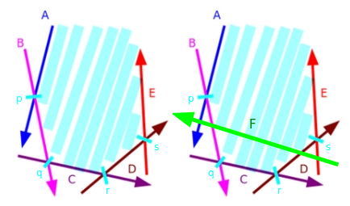

اشتراک نیمصفحهها¶
در این مقاله به بررسی مسئلهی محاسبهی اشتراک مجموعهای از نیمصفحهها خواهیم پرداخت. چنین اشتراکی را میتوان به راحتی به صورت یک ناحیه/چندضلعی محدب نمایش داد، که در آن هر نقطه در داخل آن، در داخل تمام نیمصفحهها نیز قرار دارد و این همان چندضلعی است که ما در تلاش برای یافتن یا ساختن آن هستیم. ما ابتدا درکی کلی از مسئله ارائه میدهیم، سپس یک رویکرد با پیچیدگی زمانی $O(N \log N)$ معروف به الگوریتم مرتبسازی و افزایشی (Sort-and-Incremental) را شرح میدهیم و چند نمونه از کاربردهای این تکنیک را معرفی میکنیم.
به شدت توصیه میشود که خواننده با اولیات و عملیات هندسی پایه (نقاط، بردارها، تقاطع خطوط) آشنا باشد. علاوه بر این، دانش در مورد پوسته محدب (Convex Hulls) یا ترفند پوسته محدب (Convex Hull Trick) ممکن است به درک بهتر مفاهیم این مقاله کمک کند، اما به هیچ وجه پیشنیاز نیستند.
توضیحات و تعاریف اولیه¶
در تمام این مقاله، ما چند فرض را در نظر میگیریم (مگر اینکه خلاف آن ذکر شود):
- ما $N$ را به عنوان تعداد نیمصفحهها در مجموعه داده شده تعریف میکنیم.
- ما خطوط و نیمصفحهها را با یک نقطه و یک بردار (هر نقطهای که روی خط داده شده قرار دارد و بردار جهت آن خط) نمایش خواهیم داد. در مورد نیمصفحهها، فرض میکنیم که هر نیمصفحه، ناحیهی سمت چپ بردار جهت خود را مجاز میداند. علاوه بر این، زاویه یک نیمصفحه را به عنوان زاویه قطبی بردار جهت آن تعریف میکنیم. برای مثال تصویر زیر را ببینید.
- فرض میکنیم که اشتراک حاصل همیشه یا کراندار است یا تهی. اگر نیاز به مدیریت حالت بیکران داشته باشیم، میتوانیم به سادگی ۴ نیمصفحه اضافه کنیم که یک جعبه مرزی (bounding box) به اندازه کافی بزرگ را تعریف میکنند.
- برای سادگی، فرض میکنیم که هیچ نیمصفحه موازی در مجموعه داده شده وجود ندارد. در انتهای مقاله به چگونگی برخورد با چنین مواردی خواهیم پرداخت.

نیمصفحه $y \geq 2x - 2$ را میتوان با نقطه $P = (1, 0)$ و بردار جهت $PQ = Q - P = (1, 2)$ نمایش داد.
روش Brute Force - $O(N^3)$¶
یکی از سرراستترین و واضحترین راهحلها این است که نقطه تقاطع خطوط تمام زوجهای نیمصفحهها را محاسبه کنیم و برای هر نقطه بررسی کنیم که آیا داخل تمام نیمصفحههای دیگر قرار دارد یا خیر. از آنجایی که $O(N^2)$ نقطه تقاطع وجود دارد و برای هر یک از آنها باید $O(N)$ نیمصفحه را بررسی کنیم، پیچیدگی زمانی کل $O(N^3)$ خواهد بود. ناحیه واقعی اشتراک را میتوان با استفاده از، به عنوان مثال، یک الگوریتم پوسته محدب (Convex Hull) روی مجموعه نقاط تقاطعی که در تمام نیمصفحهها قرار داشتند، بازسازی کرد.
به راحتی میتوان فهمید چرا این روش کار میکند: رئوس چندضلعی محدب حاصل، همگی نقاط تقاطع خطوط نیمصفحهها هستند و هر یک از این رئوس به وضوح بخشی از تمام نیمصفحهها هستند. مزیت اصلی این روش این است که درک، به خاطر سپردن و پیادهسازی آن در لحظه آسان است، اگر فقط نیاز به بررسی تهی بودن یا نبودن اشتراک داشته باشید. با این حال، این روش بسیار کند و برای اکثر مسائل نامناسب است، بنابراین به چیزی سریعتر نیاز داریم.
روش افزایشی - $O(N^2)$¶
یک رویکرد نسبتاً سرراست دیگر این است که اشتراک نیمصفحهها را به صورت افزایشی، یکی یکی، بسازیم. این روش اساساً معادل برش یک چندضلعی محدب با یک خط به تعداد $N$ بار و حذف نیمصفحههای زائد در هر مرحله است. برای انجام این کار، میتوانیم چندضلعی محدب را به صورت لیستی از پارهخطها نمایش دهیم و برای برش آن با یک نیمصفحه، به سادگی نقاط تقاطع پارهخطها با خط نیمصفحه را پیدا میکنیم (اگر خط به درستی چندضلعی را قطع کند، تنها دو نقطه تقاطع وجود خواهد داشت)، و تمام پارهخطهای بین این دو نقطه را با پارهخط جدید مربوط به نیمصفحه جایگزین میکنیم. از آنجایی که چنین رویهای را میتوان در زمان خطی پیادهسازی کرد، میتوانیم به سادگی با یک جعبه مرزی بزرگ شروع کرده و آن را با هر یک از نیمصفحهها برش دهیم و در نهایت به پیچیدگی زمانی کل $O(N^2)$ برسیم.
این روش گام بزرگی در جهت درست است، اما به نظر میرسد که پیمایش $O(N)$ نیمصفحه در هر مرحله، کاری بیهوده است. در ادامه خواهیم دید که با انجام چند مشاهده هوشمندانه، ایدههای پشت این رویکرد افزایشی را میتوان برای ایجاد یک الگوریتم با پیچیدگی $O(N \log N)$ بازیافت کرد.
الگوریتم مرتبسازی و افزایشی - $O(N \log N)$¶
اولین منبعی که به طور رسمی این الگوریتم را مستند کرده و ما توانستیم پیدا کنیم، پایاننامه Zeyuan Zhu برای مسابقه انتخابی تیم چین با عنوان «الگوریتم جدید برای اشتراک نیمصفحهها و ارزش عملی آن» از سال ۲۰۰۶ بود. رویکردی که در ادامه شرح خواهیم داد بر اساس همین الگوریتم است، اما به جای محاسبه دو اشتراک جداگانه برای نیمههای پایینی و بالایی اشتراک، ما همه آن را به یکباره در یک گذر با یک deque (صف دوطرفه) خواهیم ساخت.
خود الگوریتم، همانطور که از نامش پیداست، از این واقعیت بهره میبرد که ناحیه حاصل از اشتراک نیمصفحهها محدب است و بنابراین از تعدادی پارهخط از نیمصفحهها تشکیل شده که بر اساس زاویهشان مرتب شدهاند. این به یک مشاهده حیاتی منجر میشود: اگر ما نیمصفحهها را به ترتیبی که بر اساس زاویه مرتب شدهاند (همانطور که در شکل نهایی اشتراک ظاهر میشوند) به صورت افزایشی قطع دهیم و آنها را در یک صف دوطرفه ذخیره کنیم، آنگاه فقط نیاز به حذف نیمصفحهها از ابتدا و انتهای deque خواهیم داشت.
برای تجسم بهتر این واقعیت، فرض کنید در حال اجرای رویکرد افزایشی که قبلاً توضیح داده شد بر روی مجموعهای از نیمصفحههای مرتب شده بر اساس زاویه هستیم (در این حالت، فرض میکنیم آنها از $-\pi$ تا $\pi$ مرتب شدهاند) و فرض کنید که در آستانه شروع مرحله دلخواه $k$ هستیم. این بدان معناست که ما قبلاً اشتراک $k-1$ نیمصفحه اول را ساختهایم. حال، چون نیمصفحهها بر اساس زاویه مرتب شدهاند، نیمصفحه $k$-ام هر چه که باشد، میتوانیم مطمئن باشیم که با نیمصفحه $(k-1)$-ام یک پیچ محدب تشکیل میدهد. به همین دلیل، چند اتفاق ممکن است رخ دهد:
- برخی (احتمالاً هیچکدام) از نیمصفحههای انتهای اشتراک ممکن است زائد شوند. در این حالت، باید این نیمصفحههای بیفایده را از انتهای deque حذف کنیم.
- برخی (احتمالاً هیچکدام) از نیمصفحههای ابتدای اشتراک ممکن است زائد شوند. مشابه حالت ۱، ما فقط آنها را از ابتدای deque حذف میکنیم.
- اشتراک ممکن است تهی شود (پس از رسیدگی به موارد ۱ و/یا ۲). در این حالت، ما فقط گزارش میدهیم که اشتراک تهی است و الگوریتم را خاتمه میدهیم.
ما میگوییم یک نیمصفحه "زائد" است اگر هیچ کمکی به اشتراک نکند. چنین نیمصفحهای را میتوان حذف کرد و اشتراک حاصل به هیچ وجه تغییر نخواهد کرد.
در اینجا یک مثال کوچک با یک تصویر آورده شده است:
فرض کنید $H = \{ A, B, C, D, E \}$ مجموعه نیمصفحههایی باشد که در حال حاضر در اشتراک وجود دارند. علاوه بر این، فرض کنید $P = \{ p, q, r, s \}$ مجموعه نقاط تقاطع نیمصفحههای مجاور در H باشد. حال، فرض کنید میخواهیم آن را با نیمصفحه $F$ قطع دهیم، همانطور که در تصویر زیر دیده میشود:

توجه کنید که نیمصفحه $F$ باعث میشود $A$ و $E$ در اشتراک زائد شوند. بنابراین ما هم $A$ و هم $E$ را به ترتیب از ابتدا و انتهای اشتراک حذف کرده و $F$ را در انتها اضافه میکنیم. و در نهایت اشتراک جدید $H = \{ B, C, D, F\}$ با $P = \{ q, r, t, u \}$ را به دست میآوریم.

با در نظر گرفتن همه اینها، تقریباً همه چیزهایی را که برای پیادهسازی واقعی الگوریتم نیاز داریم در اختیار داریم، اما هنوز باید در مورد برخی موارد خاص صحبت کنیم. در ابتدای مقاله گفتیم که یک جعبه مرزی اضافه میکنیم تا مواردی که اشتراک ممکن است بیکران باشد را مدیریت کنیم، بنابراین تنها مورد پیچیدهای که واقعاً باید به آن رسیدگی کنیم، نیمصفحههای موازی است. میتوانیم دو زیرحالت داشته باشیم: دو نیمصفحه میتوانند با جهت یکسان یا با جهت مخالف موازی باشند. دلیل اینکه این مورد باید به طور جداگانه مدیریت شود این است که برای بررسی زائد بودن یا نبودن یک نیمصفحه، نیاز به محاسبه نقاط تقاطع خطوط نیمصفحهها خواهیم داشت و دو خط موازی نقطه تقاطع ندارند، بنابراین به روشی خاص برای برخورد با آنها نیاز داریم.
برای مورد نیمصفحههای موازی با جهت مخالف: توجه داشته باشید که چون ما جعبه مرزی را برای مدیریت حالت بیکران اضافه میکنیم، این حالت همچنین موردی را که پس از مرتبسازی دو نیمصفحه موازی مجاور با جهتهای مخالف داریم، مدیریت میکند، زیرا باید حداقل یکی از نیمصفحههای جعبه مرزی بین این دو وجود داشته باشد (به یاد داشته باشید که آنها بر اساس زاویه مرتب شدهاند).
- با این حال، ممکن است پس از حذف برخی نیمصفحهها از انتهای deque، دو نیمصفحه موازی با جهت مخالف در کنار هم قرار گیرند. این حالت به طور خاص تنها زمانی رخ میدهد که این دو نیمصفحه یک اشتراک تهی تشکیل دهند، زیرا این نیمصفحه آخر باعث حذف همه چیز از deque خواهد شد. برای جلوگیری از این مشکل، باید به صورت دستی نیمصفحههای موازی را بررسی کنیم و اگر جهت مخالف داشتند، فوراً الگوریتم را متوقف کرده و یک اشتراک تهی برگردانیم.
بنابراین تنها موردی که واقعاً باید مدیریت کنیم، داشتن چندین نیمصفحه با زاویه یکسان است، و معلوم میشود که این مورد به راحتی قابل مدیریت است: ما فقط باید چپترین نیمصفحه را نگه داریم و بقیه را حذف کنیم، زیرا آنها به هر حال کاملاً زائد خواهند بود. به طور خلاصه، الگوریتم کامل تقریباً به شکل زیر خواهد بود:
- با مرتبسازی مجموعه نیمصفحهها بر اساس زاویه شروع میکنیم که $O(N \log N)$ زمان میبرد.
- مجموعه نیمصفحهها را پیمایش میکنیم و برای هر کدام، رویه افزایشی را انجام میدهیم و در صورت لزوم از ابتدا و انتهای صف دوطرفه حذف میکنیم. این کار در مجموع زمان خطی خواهد برد، زیرا هر نیمصفحه فقط یک بار میتواند اضافه یا حذف شود.
- در پایان، چندضلعی محدب حاصل از اشتراک را میتوان به سادگی با محاسبه نقاط تقاطع نیمصفحههای مجاور در deque در انتهای رویه به دست آورد. این کار نیز زمان خطی خواهد برد. همچنین میتوان چنین نقاطی را در طول مرحله ۲ ذخیره کرد و این مرحله را به طور کامل نادیده گرفت، اما ما معتقدیم که محاسبه آنها در لحظه (از نظر پیادهسازی) کمی آسانتر است.
در مجموع، ما به پیچیدگی زمانی $O(N \log N)$ دست یافتیم. از آنجایی که مرتبسازی به وضوح گلوگاه الگوریتم است، میتوان الگوریتم را در حالت خاصی که نیمصفحهها از قبل بر اساس زاویهشان مرتب شدهاند، در زمان خطی اجرا کرد (نمونهای از چنین حالتی، به دست آوردن نیمصفحههایی است که یک چندضلعی محدب را تعریف میکنند).
پیادهسازی مستقیم¶
در اینجا یک نمونه پیادهسازی مستقیم از الگوریتم، با توضیحاتی برای اکثر بخشها آورده شده است:
ساختارهای ساده برای نقطه/بردار و نیمصفحه:
// در صورت نیاز، اپسیلون و بینهایت را بازتعریف کنید. مراقب خطاهای دقت باشید.
const long double eps = 1e-9, inf = 1e9;
// ساختار پایه برای نقطه/بردار.
struct Point {
long double x, y;
explicit Point(long double x = 0, long double y = 0) : x(x), y(y) {}
// جمع، تفریق، ضرب در ثابت، ضرب داخلی، ضرب خارجی.
friend Point operator + (const Point& p, const Point& q) {
return Point(p.x + q.x, p.y + q.y);
}
friend Point operator - (const Point& p, const Point& q) {
return Point(p.x - q.x, p.y - q.y);
}
friend Point operator * (const Point& p, const long double& k) {
return Point(p.x * k, p.y * k);
}
friend long double dot(const Point& p, const Point& q) {
return p.x * q.x + p.y * q.y;
}
friend long double cross(const Point& p, const Point& q) {
return p.x * q.y - p.y * q.x;
}
};
// ساختار پایه برای نیمصفحه.
struct Halfplane {
// 'p' یک نقطه از خط و 'pq' بردار جهت خط است.
Point p, pq;
long double angle;
Halfplane() {}
Halfplane(const Point& a, const Point& b) : p(a), pq(b - a) {
angle = atan2l(pq.y, pq.x);
}
// بررسی میکند که آیا نقطه 'r' خارج از این نیمصفحه است یا خیر.
// هر نیمصفحه ناحیه سمت چپ خط خود را مجاز میداند.
bool out(const Point& r) {
return cross(pq, r - p) < -eps;
}
// مقایسهگر برای مرتبسازی.
bool operator < (const Halfplane& e) const {
return angle < e.angle;
}
// نقطه تقاطع خطوط دو نیمصفحه. فرض بر این است که هرگز موازی نیستند.
friend Point inter(const Halfplane& s, const Halfplane& t) {
long double alpha = cross((t.p - s.p), t.pq) / cross(s.pq, t.pq);
return s.p + (s.pq * alpha);
}
};
الگوریتم:
// الگوریتم اصلی
vector<Point> hp_intersect(vector<Halfplane>& H) {
Point box[4] = { // جعبه مرزی به ترتیب پادساعتگرد
Point(inf, inf),
Point(-inf, inf),
Point(-inf, -inf),
Point(inf, -inf)
};
for(int i = 0; i<4; i++) { // افزودن نیمصفحههای جعبه مرزی.
Halfplane aux(box[i], box[(i+1) % 4]);
H.push_back(aux);
}
// مرتبسازی بر اساس زاویه و شروع الگوریتم
sort(H.begin(), H.end());
deque<Halfplane> dq;
int len = 0;
for(int i = 0; i < int(H.size()); i++) {
// حذف از انتهای deque تا زمانی که آخرین نیمصفحه زائد باشد
while (len > 1 && H[i].out(inter(dq[len-1], dq[len-2]))) {
dq.pop_back();
--len;
}
// حذف از ابتدای deque تا زمانی که اولین نیمصفحه زائد باشد
while (len > 1 && H[i].out(inter(dq[0], dq[1]))) {
dq.pop_front();
--len;
}
// بررسی حالت خاص: نیمصفحههای موازی
if (len > 0 && fabsl(cross(H[i].pq, dq[len-1].pq)) < eps) {
// نیمصفحههای موازی با جهت مخالف که در نهایت در مقابل هم قرار گرفتهاند.
if (dot(H[i].pq, dq[len-1].pq) < 0.0)
return vector<Point>();
// نیمصفحه با جهت یکسان: فقط چپترین نیمصفحه را نگه دار.
if (H[i].out(dq[len-1].p)) {
dq.pop_back();
--len;
}
else continue;
}
// افزودن نیمصفحه جدید
dq.push_back(H[i]);
++len;
}
// پاکسازی نهایی: بررسی نیمصفحههای ابتدا در برابر انتها و برعکس
while (len > 2 && dq[0].out(inter(dq[len-1], dq[len-2]))) {
dq.pop_back();
--len;
}
while (len > 2 && dq[len-1].out(inter(dq[0], dq[1]))) {
dq.pop_front();
--len;
}
// در صورت لزوم، اشتراک تهی را گزارش کن
if (len < 3) return vector<Point>();
// بازسازی چندضلعی محدب از نیمصفحههای باقیمانده.
vector<Point> ret(len);
for(int i = 0; i+1 < len; i++) {
ret[i] = inter(dq[i], dq[i+1]);
}
ret.back() = inter(dq[len-1], dq[0]);
return ret;
}
بحث در مورد پیادهسازی¶
نکته ویژه ای که باید به آن توجه داشت این است که در صورت وجود چندین نیمصفحه که در یک نقطه مشترک تقاطع دارند، این الگوریتم میتواند نقاط مجاور تکراری را در چندضلعی نهایی برگرداند. با این حال، این نباید تأثیری در قضاوت صحیح در مورد تهی بودن یا نبودن اشتراک داشته باشد و همچنین به هیچ وجه بر مساحت چندضلعی تأثیر نمیگذارد. بسته به کارهایی که باید بعداً انجام دهید، ممکن است بخواهید این موارد تکراری را حذف کنید. این کار را میتوانید به راحتی با std::unique انجام دهید. ما میخواهیم نقاط تکراری را در طول اجرای الگوریتم نگه داریم تا اشتراکهایی با مساحت صفر (به عنوان مثال، اشتراکهایی که از یک نقطه، خط یا پارهخط تشکیل شدهاند) به درستی محاسبه شوند. خواننده را تشویق میکنم تا چند مورد کوچک دستساز را که در آن اشتراک به یک نقطه یا خط منجر میشود، آزمایش کند.
یک نکته دیگر که باید در مورد آن صحبت شود این است که اگر نیمصفحهها به شکل یک قید خطی (مثلاً $ax + by + c \leq 0$) به ما داده شوند، چه باید کرد. در چنین حالتی، دو گزینه وجود دارد. یا میتوانید الگوریتم را با تغییرات مربوطه برای کار با چنین نمایشی پیادهسازی کنید (اساساً ساختار نیمصفحه خود را ایجاد کنید، که اگر با ترفند پوسته محدب آشنا باشید باید نسبتاً سرراست باشد)، یا میتوانید با گرفتن هر ۲ نقطه از هر خط، خطوط را به نمایشی که در این مقاله استفاده کردیم تبدیل کنید. به طور کلی، توصیه میشود برای جلوگیری از مشکلات دقت اضافی، با نمایشی که در مسئله به شما داده شده است کار کنید.
مسائل، وظایف و کاربردها¶
بسیاری از مسائلی که میتوان با اشتراک نیمصفحهها حل کرد، بدون آن نیز قابل حل هستند، اما با رویکردهایی (معمولاً) پیچیدهتر یا غیرمعمولتر. به طور کلی، اشتراک نیمصفحهها میتواند هنگام برخورد با مسائل مربوط به چندضلعیها (عمدتاً محدب)، رویتپذیری در صفحه و برنامهریزی خطی دو بعدی ظاهر شود. در اینجا چند نمونه از وظایفی که میتوان با این تکنیک حل کرد آورده شده است:
اشتراک چندضلعی محدب¶
یکی از کاربردهای کلاسیک اشتراک نیمصفحهها: با داشتن $N$ چندضلعی، ناحیهای را که در داخل همه چندضلعیها قرار دارد، محاسبه کنید.
از آنجایی که اشتراک مجموعهای از نیمصفحهها یک چندضلعی محدب است، ما همچنین میتوانیم یک چندضلعی محدب را به عنوان مجموعهای از نیمصفحهها نمایش دهیم (هر ضلع چندضلعی، پارهخطی از یک نیمصفحه است). این نیمصفحهها را برای هر چندضلعی تولید کرده و اشتراک کل مجموعه را محاسبه کنید. پیچیدگی زمانی کل $O(S \log S)$ است، که در آن S تعداد کل اضلاع همه چندضلعیها است. این مسئله همچنین به لحاظ نظری میتواند در $O(S \log N)$ با ادغام $N$ مجموعه از نیمصفحهها با استفاده از یک heap و سپس اجرای الگوریتم بدون مرحله مرتبسازی حل شود، اما چنین راهحلی ضریب ثابت بسیار بدتری نسبت به مرتبسازی مستقیم دارد و فقط برای $N$ بسیار کوچک، بهبودهای جزئی در سرعت ایجاد میکند.
رویتپذیری در صفحه¶
مسائلی که به چیزی در راستای "تعیین اینکه آیا برخی از پارهخطها از برخی نقاط در صفحه قابل مشاهده هستند" نیاز دارند، معمولاً میتوانند به عنوان مسائل اشتراک نیمصفحهها فرمولبندی شوند. به عنوان مثال، وظیفه زیر را در نظر بگیرید: با داشتن یک چندضلعی ساده (نه لزوماً محدب)، تعیین کنید که آیا نقطهای در داخل چندضلعی وجود دارد که کل مرز چندضلعی از آن نقطه قابل مشاهده باشد. این مسئله همچنین به عنوان یافتن هسته یک چندضلعی شناخته میشود و میتواند با اشتراک ساده نیمصفحهها حل شود، به این صورت که هر ضلع چندضلعی را به عنوان یک نیمصفحه در نظر گرفته و سپس اشتراک آنها را محاسبه کنیم.
در اینجا یک مسئله مرتبط و جالبتر وجود دارد که توسط آرتم واسیلیف در یکی از سخنرانیهای مدرسه تابستانی ICPC برزیل ارائه شد: با داشتن مجموعهای از نقاط $p_1, p_2, \dots, p_n$ در صفحه، تعیین کنید که آیا نقطهای $q$ وجود دارد که بتوانید در آن بایستید و تمام نقاط $p$ را از چپ به راست به ترتیب صعودی اندیس آنها ببینید.
چنین مسئلهای را میتوان با توجه به این نکته حل کرد که دیدن یک نقطه $p_i$ در سمت چپ $p_j$ همان دیدن سمت راست پارهخط از $p_i$ به $p_j$ است (یا به طور معادل، دیدن سمت چپ پارهخط از $p_j$ به $p_i$). با در نظر گرفتن این موضوع، میتوانیم به سادگی برای هر پارهخط $p_i p_{i+1}$ (یا $p_{i+1} p_i$ بسته به جهتی که انتخاب میکنید) یک نیمصفحه ایجاد کرده و بررسی کنیم که آیا اشتراک کل مجموعه تهی است یا خیر.
اشتراک نیمصفحه با جستجوی دودویی¶
یک کاربرد رایج دیگر، استفاده از اشتراک نیمصفحهها به عنوان ابزاری برای اعتبارسنجی گزاره یک رویه جستجوی دودویی (binary search) است. در اینجا نمونهای از چنین مسئلهای، که توسط آرتم واسیلیف در همان سخنرانی که قبلاً ذکر شد ارائه شده است: با داشتن یک چندضلعی محدب $P$، بزرگترین دایرهای را که میتوان در داخل آن محاط کرد، پیدا کنید.
به جای جستجوی نوعی راهحل فرم بسته، فرمولهای آزاردهنده یا راهحلهای الگوریتمی مبهم، بیایید سعی کنیم روی پاسخ، جستجوی دودویی انجام دهیم. توجه داشته باشید که برای یک $r$ ثابت، یک دایره با شعاع $r$ تنها در صورتی میتواند در داخل $P$ محاط شود که نقطهای در داخل $P$ وجود داشته باشد که فاصله آن از تمام نقاط مرزی $P$ بزرگتر یا مساوی $r$ باشد. این شرط را میتوان با "کوچک کردن" چندضلعی به سمت داخل به اندازه فاصله $r$ و بررسی اینکه چندضلعی غیر تبهگن باقی میماند (یا خود یک نقطه/پارهخط است) اعتبارسنجی کرد. چنین رویهای را میتوان با در نظر گرفتن نیمصفحههای اضلاع چندضلعی به ترتیب پادساعتگرد، انتقال هر یک از آنها به اندازه فاصله $r$ در جهت ناحیهای که مجاز میدانند (یعنی عمود بر بردار جهت نیمصفحه) و بررسی تهی نبودن اشتراک، شبیهسازی کرد.
واضح است که اگر بتوانیم دایرهای با شعاع $r$ را محاط کنیم، میتوانیم هر دایره دیگری با شعاع کوچکتر از $r$ را نیز محاط کنیم. بنابراین میتوانیم یک جستجوی دودویی روی شعاع $r$ انجام دهیم و هر مرحله را با استفاده از اشتراک نیمصفحهها اعتبارسنجی کنیم. همچنین، توجه داشته باشید که نیمصفحههای یک چندضلعی محدب از قبل بر اساس زاویه مرتب شدهاند، بنابراین میتوان از مرحله مرتبسازی در الگوریتم صرفنظر کرد. بنابراین به پیچیدگی زمانی کل $O(NK)$ میرسیم، که در آن $N$ تعداد رئوس چندضلعی و $K$ تعداد تکرارهای جستجوی دودویی است (مقدار واقعی به دامنه پاسخهای ممکن و دقت مورد نظر بستگی خواهد داشت).
برنامهریزی خطی دو بعدی¶
یک کاربرد دیگر اشتراک نیمصفحهها، برنامهریزی خطی در دو متغیر است. تمام قیود خطی برای دو متغیر را میتوان به شکل $Ax + By + C \leq 0$ بیان کرد (عملگر نابرابری ممکن است متفاوت باشد). واضح است که اینها فقط نیمصفحهها هستند، بنابراین بررسی وجود یک جواب ممکن برای مجموعهای از قیود خطی را میتوان با اشتراک نیمصفحهها انجام داد. علاوه بر این، برای یک مجموعه معین از قیود خطی، میتوان ناحیه جوابهای ممکن را محاسبه کرد (یعنی اشتراک نیمصفحهها) و سپس به چندین پرسوجو برای بیشینهسازی/کمینهسازی یک تابع خطی $f(x, y)$ تحت این قیود در $O(\log N)$ برای هر پرسوجو با استفاده از جستجوی دودویی پاسخ داد (بسیار شبیه به ترفند پوسته محدب).
شایان ذکر است که یک الگوریتم تصادفی نسبتاً ساده نیز وجود دارد که میتواند بررسی کند آیا مجموعهای از قیود خطی دارای جواب ممکن است یا خیر، و یک تابع خطی را تحت قیود داده شده بیشینه/کمینه کند. این الگوریتم تصادفی نیز به خوبی توسط آرتم واسیلیف در سخنرانی ذکر شده توضیح داده شده است. در اینجا چند منبع اضافی در مورد آن برای خواننده علاقهمند آورده شده است: CG - Lecture 4, parts 4 and 5 و وبلاگ Petr Mitrichev (که شامل راهحل سختترین مسئله در لیست مسائل تمرینی زیر است).
مسائل تمرینی¶
مسائل کلاسیک، کاربرد مستقیم¶
- Codechef - انیمش تصمیم میگیرد ساکن شود (Animesh decides to settle down)
- POJ - چگونه منِ ریاضیدان در شگفتم که تو چیستی! (!How I mathematician Wonder What You Are)
- POJ - تابلوی امتیازات چرخان (Rotating Scoreboard)
- POJ - نظارت تصویری (Video Surveillance)
- POJ - گالری هنر (Art Gallery)
- POJ - کنسرت اویو (Uyuw's Concert)
مسائل دشوارتر¶
- POJ - دورترین نقطه از دریا (Most Distant Point from the Sea) - متوسط
- Baekjoon - جزیره ججو (Jeju's Island) - مشابه بالایی اما با تستکیسهای ظاهراً قویتر
- POJ - فنگ شویی (Feng Shui) - متوسط
- POJ - سهگانه (Triathlon) - متوسط/سخت
- DMOJ - پیکان (Arrow) - متوسط/سخت
- POJ - پاسگاه جنگلی (Jungle Outpost) - سخت
- Codeforces - پاسگاه جنگلی (Jungle Outpost) (لینک جایگزین، مسئله J) - سخت
- Yandex - مقدار عدم تقارن (Asymmetry Value) (برای مشاهده نیاز به مسابقه مجازی است، مسئله F) - بسیار سخت
مسائل اضافی¶
- چهلمین کمپ برنامهنویسی پتروزاودسک، زمستان ۲۰۲۱ - روز ۱: مسابقه دانشگاه یاگیلونیا، جایزه بزرگ کراکوف - مسئله B: (تقریباً) برش عادلانه کیک. در زمان نگارش این مقاله، این مسئله خصوصی بود و فقط برای شرکتکنندگان کمپ برنامهنویسی قابل دسترسی بود.
منابع، کتابشناسی و دیگر مآخذ¶
منابع اصلی¶
- الگوریتم جدید برای اشتراک نیمصفحهها و ارزش عملی آن. (New Algorithm for Half-plane Intersection and its Practical Value) مقاله اصلی الگوریتم.
- سخنرانی آرتم واسیلیف در مدرسه تابستانی ICPC برزیل ۲۰۲۰. سخنرانی فوقالعاده در مورد اشتراک نیمصفحهها. موضوعات هندسی دیگر را نیز پوشش میدهد.
وبلاگهای خوب (چینی)¶
- مبانی هندسه محاسباتی - اشتراک نیمصفحهها. (Fundamentals of Computational Geometry - Intersection of Half-planes)
- معرفی دقیق الگوریتم اشتراک نیمصفحهها. (Detailed introduction to the half-plane intersection algorithm)
- خلاصه مسائل اشتراک نیمصفحهها. (Summary of Half-plane intersection problems)
- روش افزایشی مرتبسازی اشتراک نیمصفحهها. (Sorting incremental method of half-plane intersection)